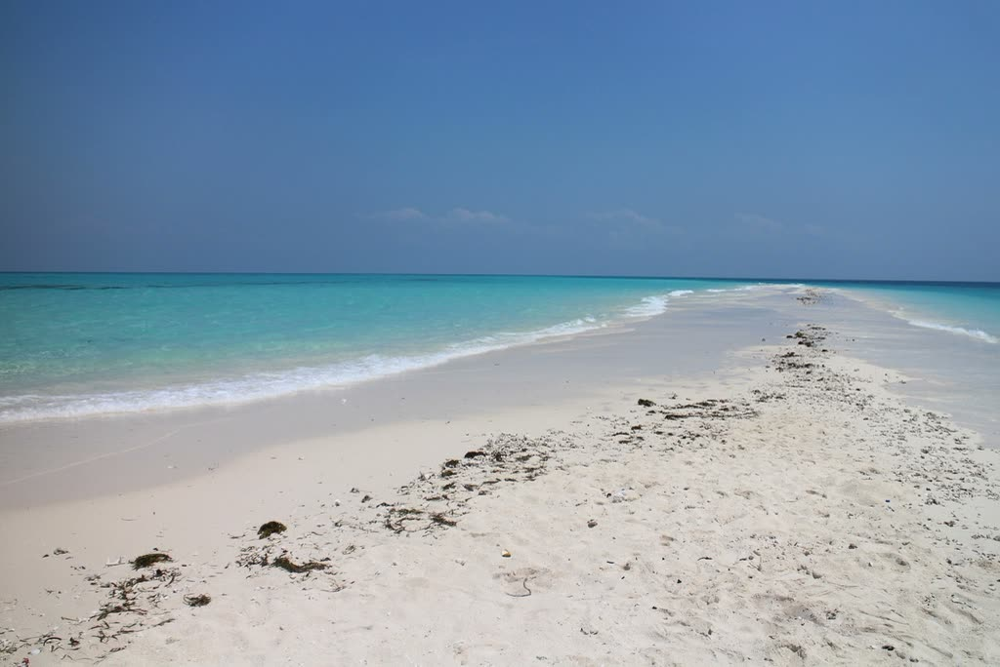
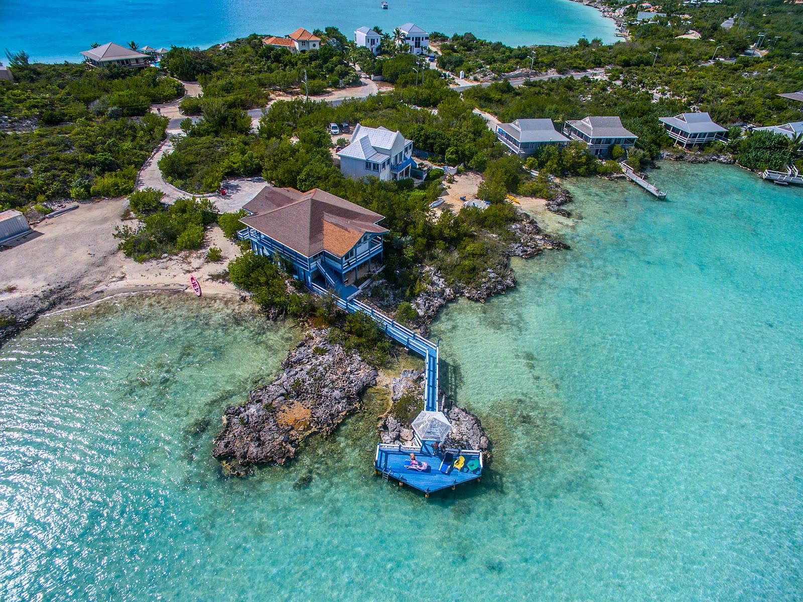
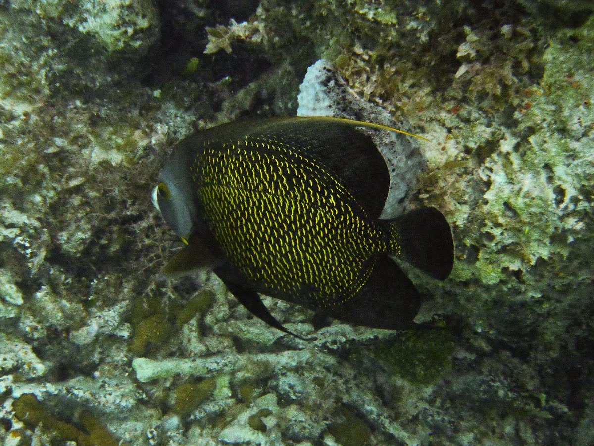
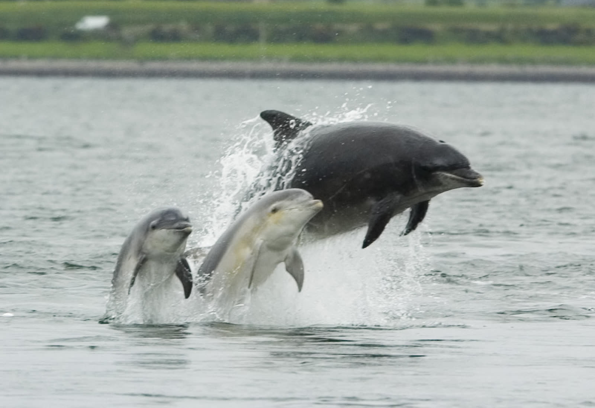

Sandbars off Pine Cay
Stand in ankle-deep turquoise water in the middle of the sea.

Private, locally owned boat charters from Blue Haven Marina. Shallow-draft boats that reach the sandbars, wrecks and empty beaches the big boats can't.
4.9 from 75 reviews · Grace Bay beach pickup
Three taps and we'll print you a postcard of your day on the water. Tap the postcard to flip it.

Stand in ankle-deep turquoise water in the middle of the sea.

Snorkel over the old cannons at Fort George Cay and the wreck of La Famille Express. Gear is on board.

The islands' famous bottlenose dolphin and his friend Dreamer sometimes join the ride. Never guaranteed, always magic.
For two. Fast, nimble, romantic.
Small groups and families who want to cover ground.
Bigger groups, birthdays and reunions.
Top-end luxury. 40 feet of it.
Two-seaters with Bluetooth speakers.

Skip the big booking platforms and talk to the crew yourself.